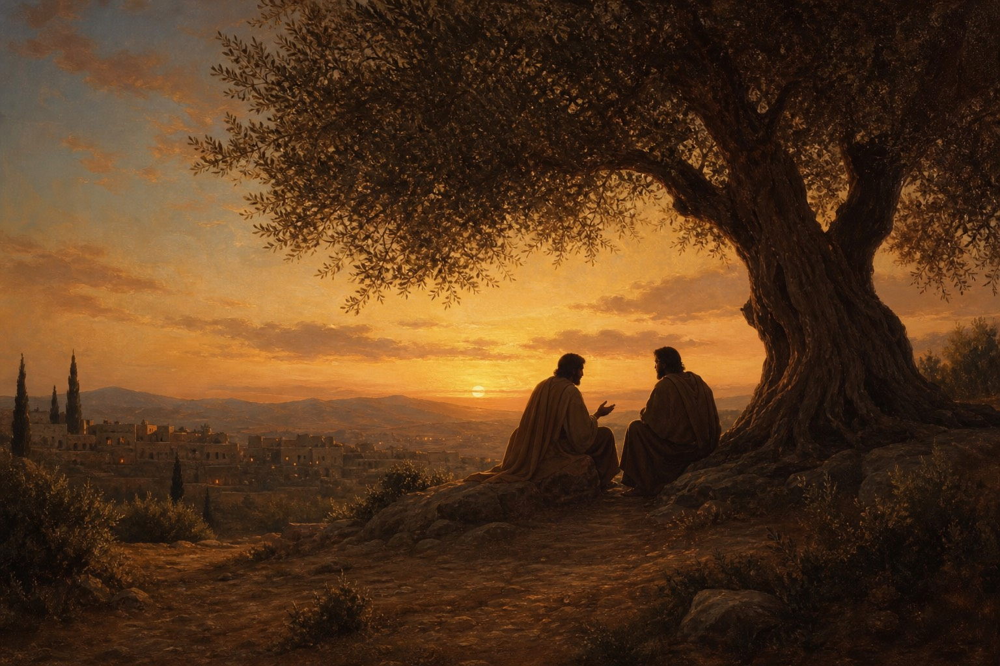
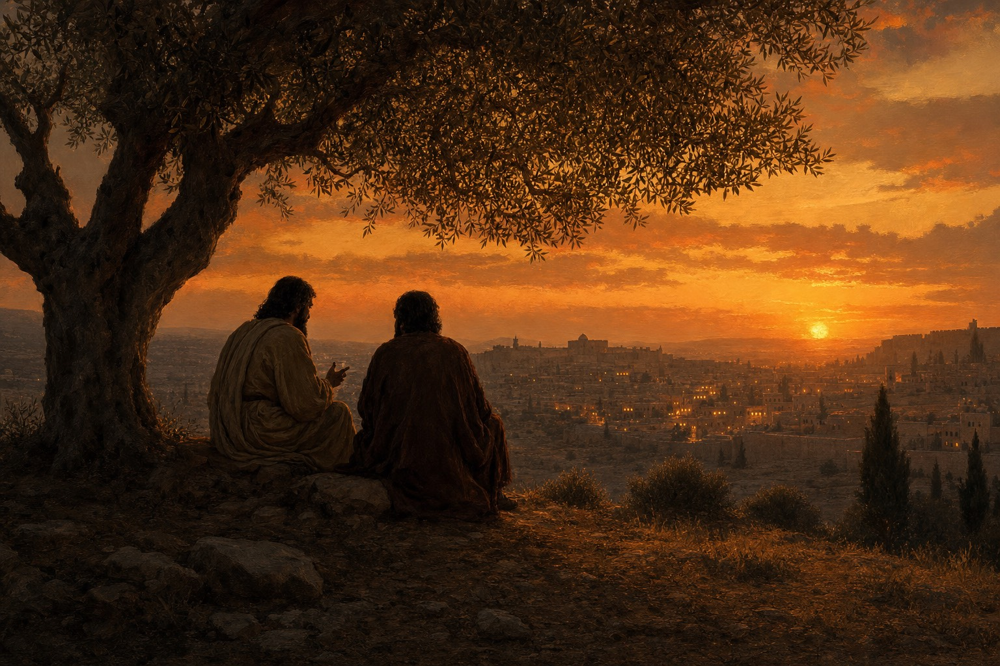
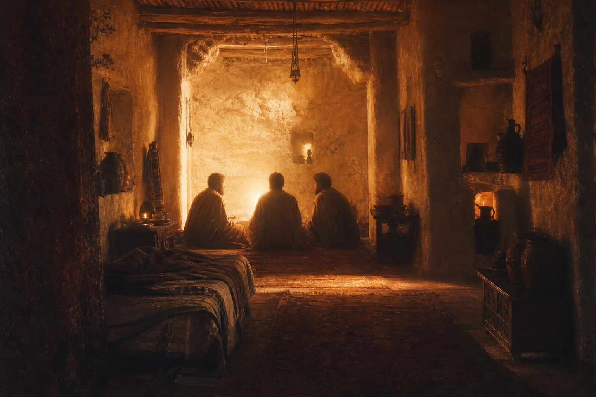
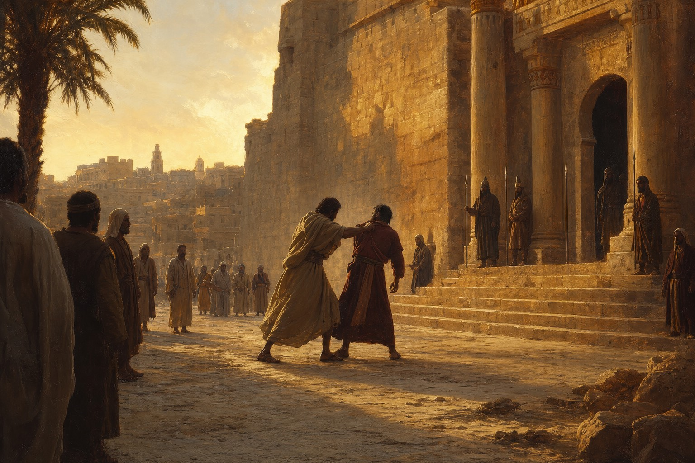

挽回 · 权柄 · 饶恕
拖拽卡片 · 点击两侧切换 · 点按钮进入
私下指出、带一两个人、告诉教会。处理罪的目标是得回弟兄，而不是赢得争论。
凡在地上捆绑与释放的，在天上也要捆绑与释放。同心祷告与基督在中间的同在。
非七次，乃是七十个七次。一千万与十两银子的比喻，警告我们必须从心里饶恕弟兄。
15 “倘若你的弟兄得罪你，你就去，趁着只有他和你在一处的时候，指出他的错来。他若听你，你便得了你的弟兄；
16 他若不听，你就另外带一两个人同去，要凭两三个人的口作见证，句句都可定准。
17 若是不听他们，就告诉教会；若是不听教会，就看他像外邦人和税吏一样。”
耶稣给了哪几个处理弟兄犯罪的步骤？这几个步骤的目的是什么？
“他若听你，你便得了你的弟兄”，这句话说明处理罪的目标是什么？
第一步是“只有他和你在一处”的目的是什么？
第二步为什么要带一两个人同去？
第三步“告诉教会”是什么意思？
最后“看他像外邦人和税吏”是什么意思？为什么强调教会必须处理罪？
📖 经文依据：马太福音 18:15-17
📖 经文依据：马太福音 18:15
📖 经文依据：马太福音 18:15
📖 经文依据：马太福音 18:16
📖 经文依据：马太福音 18:17
📖 经文依据：马太福音 18:17
18 “我实在告诉你们，凡你们在地上所捆绑的，在天上也要捆绑；凡你们在地上所释放的，在天上也要释放。
19 我又告诉你们，若是你们中间有两个人在地上同心合意地求什么事，我在天上的父必为他们成全。
20 因为无论在哪里，有两三个人奉我的名聚会，那里就有我在他们中间。”
这段关于“捆绑释放、同心祷告”的经文，为什么会突然出现在这里？
18 节中，在地上“捆绑”和“释放”到底是什么意思？
19 节中，“两个人同心合意求什么事，父必成全”是指任何愿望吗？
20 节中，“两三个人奉主名聚会，主在中间”的原意和重点是什么？
📖 经文依据：马太福音 18:18-20
📖 经文依据：马太福音 18:18
📖 经文依据：马太福音 18:19

📖 经文依据：马太福音 18:20
21 彼得进前来，对耶稣说：“主啊，我弟兄得罪我，我当饶恕他几次呢？到七次可以吗？”22 耶稣说：“不是到七次，乃是到七十个七次。
23 天国好像一个王要和他仆人算账。24 才算的时候，有人带了一个欠一千万银子的来。25 因为他没有什么偿还之物，主人吩咐把他和他妻子儿女并一切所有的都卖了偿还。
26 那仆人就俯伏拜他，说：‘主啊，宽容我，将来我都要还清。’27 主人就动了慈心，把他释放了，并且免了他的债。
28 那仆人出来，遇见一个欠他十两银子的同伴，便揪着他，掐住他的喉咙，说：‘你把所欠的还我！’29 他的同伴俯伏央求他说：‘宽容我吧，将来我必还清。’
30 他不肯，竟把他下在监里。31 众同伴看见就甚忧愁，去把这事告诉了主人。
32 主人叫了他来，说：‘你这恶奴才！你央求我，我就把你所欠的都免了，33 你不应当怜恤你的同伴，像我怜恤你吗？’
34 主人就大怒，把他交给掌刑的，等他还清所欠的债。35 你们各人若不从心里饶恕你的弟兄，我天父也要这样待你们了。”
彼得为什么觉得七次已经很多？“七十个七次”代表第 491 次就可以不饶恕吗？
“一千万银子”和“十两银子”分别代表什么？对比强烈吗？
为什么主人称那个不饶恕人的仆人为“恶仆”？根本问题在哪里？
为什么不饶恕是如此严重的罪？圣经其他地方怎么说？
“从心里饶恕”是什么意思？我们该如何行？
📖 经文依据：马太福音 18:21-22
📖 经文依据：马太福音 18:24, 28

📖 经文依据：马太福音 18:32-33
📖 经文依据：马太福音 18:34-35
📖 经文依据：马太福音 18:35
“你不应当怜恤你的同伴，像我怜恤你吗？”
愿我们都活在天国的秩序中：既认真看待罪的圣洁纪律，又满有基督无限怜悯、从心里发出饶恕的温柔。